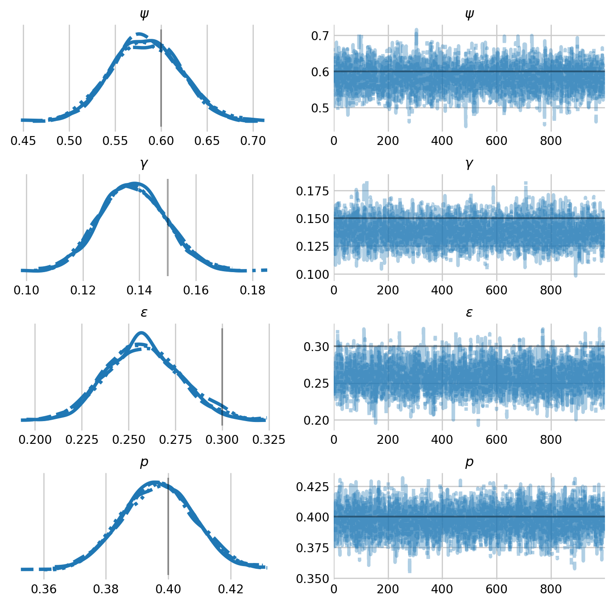

Dynamic occupancy
Estimating patch colonization and extinction with Numpyro
I started exploring NumPyro because of its ability to marginalize discrete latent states in Hidden Markov Models (HMMs). Thankfully, the NumPyro website includes a handy tutorial on how to fit a Cormack-Jolly-Seber model in NumPyro. Unfortunately, this tutorial also assumes familiarity with many NumPyro concepts. As such, it took me some time to grasp everything that was going on within it. This notebook will hopefully be a gentler introduction to ecological HMMs in NumPyro.
In this notebook, I will demonstrate how to estimate patch colonization and extinction with dynamic occupancy models in NumPyro. In a dynamic occupancy model, occupied patches can go extinct (\(\epsilon\)) or remain occupied (\(1-\epsilon\)). Additionally, unoccupied patches can be colonized (\(\gamma\)) or remain unoccupied (\(1-\gamma\)) (Figure 1). The proportion of patches occupied at the first time step is dictated by the parameter \(\psi\), i.e., the initial occupancy probability.
from jax import random
from numpyro.contrib.control_flow import scan
from numpyro.infer import NUTS, MCMC, Predictive
import arviz as az
import jax.numpy as jnp
import matplotlib.pyplot as plt
import numpy as np
import numpyro
import numpyro.distributions as dist
import seaborn as sns
# plotting defaults
plt.style.use('fivethirtyeight')
plt.rcParams['axes.facecolor'] = 'white'
plt.rcParams['figure.facecolor'] = 'white'
plt.rcParams['axes.spines.left'] = False
plt.rcParams['axes.spines.right'] = False
plt.rcParams['axes.spines.top'] = False
plt.rcParams['axes.spines.bottom'] = False
sns.set_palette("tab10")
# hyperparameters
RANDOM_SEED = 1792
## true values for colext model
PSI_TRUE = 0.6
EPSILON_TRUE = 0.3
GAMMA_TRUE = 0.15
P_TRUE = 0.4
SITE_COUNT = 250
SURVEY_COUNT = 3
SEASON_COUNT = 10
def simulate_data():
"""Simulate detection/non-detection data from a dynamic occupancy model"""
rng = np.random.default_rng(RANDOM_SEED)
# empty array to fill in the occupancy states later
z = np.zeros((SITE_COUNT, SEASON_COUNT), dtype=int)
# initial values for the occupancy state
z[:, 0] = rng.binomial(n=1, p=PSI_TRUE, size=SITE_COUNT)
# simulate transitions
for t in range(1, SEASON_COUNT):
# patches can be colonized, go extinct, remain occupied, or remain unoccupied
mu_z = z[:, t-1] * (1 - EPSILON_TRUE) + (1 - z[:, t-1]) * GAMMA_TRUE
z[:, t] = rng.binomial(n=1, p=mu_z)
# simulate detection non-detection data
mu_x = z * P_TRUE
x = rng.binomial(n=1, p=mu_x[:, :, None],
size=(SITE_COUNT, SEASON_COUNT, SURVEY_COUNT))
return xAs with the static occupancy model, we can parameterize the model in terms of its latent \(z_{i,j}\) state, which indicates if site \(i\) was occupied. The primary difference is that \(\mathbf{Z}\) is now a matrix, where \(j\) indicates the “season”, or primary period. States can transition between seasons. States are however, constant between surveys, or secondary periods, which take place within a season. As such, \(\mathbf{Y}\) is now an array, with shape (site_count, season_count, survey_count), where \(y_{i,j,k} \sim \text{Bern}(z_{i,j} \, p)\). It’s possible to include covariate effects on any of the four probabilities in the model: \(\psi, \gamma, \epsilon\), and \(p.\) Nevertheless, we will introduce the NumPyro syntax with a simple model where every parameter is constant across sites, seasons, and visits.
Defining the model
Just like in the introductory notebook to NumPyro, we will define our dynamic occupancy model with a Python function, dynamic_occupancy(), that contains NumPyro random variables. This model, however, will contain a new character, the scan() function, as well as an additional function within our model transition_and_detect(). The scan() function sequentially applies the transition_and_detect() to our occupancy data, starting with initial values.
def dynamic_occupancy(detection_history):
'''Dynamic occupancy model in NumPyro.'''
site_count, season_count, survey_count = detection_history.shape
# scalar priors for the four probabilistic parameters
psi = numpyro.sample("psi", dist.Uniform(0, 1)) # initial occupancy prob
gamma = numpyro.sample("gamma", dist.Uniform(0, 1)) # colonization prob
epsilon = numpyro.sample("epsilon", dist.Uniform(0, 1)) # extinction prob
p = numpyro.sample("p", dist.Uniform(0, 1)) # recapture prob
def transition_and_detect(carry, y_t):
"""Transitions betweens states and defines the likelihood."""
# unpack the values that are returned from the transition function at
# the previous time step
z_prev, t = carry
# transition the latent state at every site
with numpyro.plate("sites", site_count):
# probability of transitioning according to the previous state
mu_z_t = z_prev * (1 - epsilon) + (1 - z_prev) * gamma
# dist.util.clamp_probs() helps the sampler avoid boundary regions
z = numpyro.sample(
"z",
dist.Bernoulli(dist.util.clamp_probs(mu_z_t)),
infer={"enumerate": "parallel"}, # this is where we marginalize!
)
# the likelihood of each observation at each site
mu_y = z * p
with numpyro.plate('surveys', survey_count):
numpyro.sample(
"y",
dist.Bernoulli(dist.util.clamp_probs(mu_y)),
obs=y_t.T
)
# carry forward the current z state and incremented time index
# None indicates we don't return/accumulate any outputs from scan
return (z, t + 1), None
# the initial state only depends on psi
with numpyro.plate('sites', site_count):
z0 = numpyro.sample(
"z0",
dist.Bernoulli(dist.util.clamp_probs(psi)),
infer={"enumerate": "parallel"},
)
# compute the likelihood of the detection data for just the first season
mu_y = z0 * p
with numpyro.plate('surveys', survey_count):
numpyro.sample(
"y0",
dist.Bernoulli(dist.util.clamp_probs(mu_y)),
obs=detection_history[:, 0].T # just the first occasion!
)
# now we scan (or apply) the transition function across the remaining seasons
scan(
transition_and_detect, # function to scan
(z0, 0), # initial states
jnp.swapaxes(detection_history[:, 1:], 0, 1), # scan across first dimension of data
)As the name suggests, transition_and_detect() transitions the discrete latent states (the process model) and detects animals during the surveys (the observation model). As such, it contains our unobserved random variable z as well as our observed random variable y. scan() requires that our inner function, transition_and_detect(), return a tuple, where the first element contains the input to the next iteration of transition_and_detect(). The next element is anything we want to report or accumulate (in this case, None, since we don’t need to track anything).
For the most part, the transition_and_detect() function is not much different than our model in the NumPyro static occupancy notebook. One difference is the use of dist.util.clamp_probs(). This is a helper function that keeps the sampler out of boundary regions, for example, by keeping \(\psi\) between \([1 \times 10^{-7}, 1 - 1 \times 10^{-7}]\) rather than \([0, 1]\).
We begin the scan after the first occasion. The \(z_{i,j}\) state at the first occasion only depends on \(\psi\). After this first occasion, we transition the states such that patches can be colonized or go extinct.
detections = simulate_data()
rng_key = random.PRNGKey(RANDOM_SEED)
# specify which sampler you want to use
nuts_kernel = NUTS(dynamic_occupancy)
# configure the MCMC run
mcmc = MCMC(nuts_kernel, num_warmup=500, num_samples=1000, num_chains=4)
# run the MCMC then inspect the output
mcmc.run(rng_key, detections)
mcmc.print_summary()/var/folders/7b/nb0vyhy90mdf30_65xwqzl300000gn/T/ipykernel_31434/1038765192.py:8: UserWarning: There are not enough devices to run parallel chains: expected 4 but got 1. Chains will be drawn sequentially. If you are running MCMC in CPU, consider using `numpyro.set_host_device_count(4)` at the beginning of your program. You can double-check how many devices are available in your system using `jax.local_device_count()`.
mcmc = MCMC(nuts_kernel, num_warmup=500, num_samples=1000, num_chains=4)
0%| | 0/1500 [00:00<?, ?it/s]warmup: 0%| | 1/1500 [00:01<32:17, 1.29s/it, 1 steps of size 2.34e+00. acc. prob=0.00]warmup: 3%|▎ | 49/1500 [00:01<00:29, 48.44it/s, 3 steps of size 3.90e-02. acc. prob=0.75]warmup: 8%|▊ | 115/1500 [00:01<00:11, 124.35it/s, 7 steps of size 1.26e+00. acc. prob=0.78]warmup: 13%|█▎ | 198/1500 [00:01<00:05, 230.05it/s, 15 steps of size 6.17e-01. acc. prob=0.78]warmup: 20%|█▉ | 297/1500 [00:01<00:03, 364.04it/s, 7 steps of size 9.94e-01. acc. prob=0.78] warmup: 27%|██▋ | 403/1500 [00:01<00:02, 504.24it/s, 7 steps of size 1.18e+00. acc. prob=0.79]warmup: 33%|███▎ | 499/1500 [00:01<00:01, 605.96it/s, 3 steps of size 4.21e-01. acc. prob=0.79]sample: 39%|███▉ | 590/1500 [00:01<00:01, 678.99it/s, 7 steps of size 6.41e-01. acc. prob=0.92]sample: 46%|████▌ | 683/1500 [00:02<00:01, 742.01it/s, 7 steps of size 6.41e-01. acc. prob=0.92]sample: 52%|█████▏ | 777/1500 [00:02<00:00, 793.70it/s, 7 steps of size 6.41e-01. acc. prob=0.93]sample: 58%|█████▊ | 869/1500 [00:02<00:00, 821.54it/s, 3 steps of size 6.41e-01. acc. prob=0.92]sample: 64%|██████▍ | 960/1500 [00:02<00:00, 834.89it/s, 7 steps of size 6.41e-01. acc. prob=0.92]sample: 70%|███████ | 1056/1500 [00:02<00:00, 869.72it/s, 7 steps of size 6.41e-01. acc. prob=0.92]sample: 77%|███████▋ | 1149/1500 [00:02<00:00, 884.57it/s, 7 steps of size 6.41e-01. acc. prob=0.92]sample: 83%|████████▎ | 1241/1500 [00:02<00:00, 892.29it/s, 7 steps of size 6.41e-01. acc. prob=0.93]sample: 89%|████████▉ | 1335/1500 [00:02<00:00, 906.25it/s, 7 steps of size 6.41e-01. acc. prob=0.92]sample: 95%|█████████▌| 1428/1500 [00:02<00:00, 896.48it/s, 7 steps of size 6.41e-01. acc. prob=0.92]sample: 100%|██████████| 1500/1500 [00:02<00:00, 501.45it/s, 7 steps of size 6.41e-01. acc. prob=0.92]
0%| | 0/1500 [00:00<?, ?it/s]warmup: 4%|▍ | 58/1500 [00:00<00:02, 574.81it/s, 7 steps of size 6.90e-02. acc. prob=0.76]warmup: 8%|▊ | 121/1500 [00:00<00:02, 602.86it/s, 7 steps of size 6.07e-01. acc. prob=0.78]warmup: 13%|█▎ | 201/1500 [00:00<00:01, 688.79it/s, 15 steps of size 5.23e-01. acc. prob=0.78]warmup: 20%|█▉ | 294/1500 [00:00<00:01, 781.49it/s, 3 steps of size 6.85e-01. acc. prob=0.78] warmup: 26%|██▋ | 395/1500 [00:00<00:01, 861.17it/s, 7 steps of size 8.77e-01. acc. prob=0.79]warmup: 33%|███▎ | 491/1500 [00:00<00:01, 892.35it/s, 7 steps of size 1.14e+00. acc. prob=0.79]sample: 40%|███▉ | 595/1500 [00:00<00:00, 940.32it/s, 7 steps of size 7.81e-01. acc. prob=0.87]sample: 47%|████▋ | 700/1500 [00:00<00:00, 974.76it/s, 7 steps of size 7.81e-01. acc. prob=0.87]sample: 54%|█████▎ | 804/1500 [00:00<00:00, 993.30it/s, 7 steps of size 7.81e-01. acc. prob=0.88]sample: 60%|██████ | 906/1500 [00:01<00:00, 997.76it/s, 7 steps of size 7.81e-01. acc. prob=0.89]sample: 67%|██████▋ | 1009/1500 [00:01<00:00, 1005.75it/s, 3 steps of size 7.81e-01. acc. prob=0.89]sample: 74%|███████▍ | 1110/1500 [00:01<00:00, 1002.63it/s, 3 steps of size 7.81e-01. acc. prob=0.89]sample: 81%|████████ | 1212/1500 [00:01<00:00, 1006.31it/s, 3 steps of size 7.81e-01. acc. prob=0.89]sample: 88%|████████▊ | 1316/1500 [00:01<00:00, 1016.34it/s, 7 steps of size 7.81e-01. acc. prob=0.89]sample: 95%|█████████▍| 1418/1500 [00:01<00:00, 995.56it/s, 3 steps of size 7.81e-01. acc. prob=0.89] sample: 100%|██████████| 1500/1500 [00:01<00:00, 935.59it/s, 7 steps of size 7.81e-01. acc. prob=0.89]
0%| | 0/1500 [00:00<?, ?it/s]warmup: 4%|▎ | 55/1500 [00:00<00:02, 545.77it/s, 15 steps of size 5.81e-02. acc. prob=0.76]warmup: 7%|▋ | 110/1500 [00:00<00:02, 542.73it/s, 15 steps of size 6.69e-01. acc. prob=0.77]warmup: 12%|█▏ | 180/1500 [00:00<00:02, 610.19it/s, 15 steps of size 5.20e-01. acc. prob=0.78]warmup: 18%|█▊ | 274/1500 [00:00<00:01, 736.98it/s, 7 steps of size 3.97e-01. acc. prob=0.78] warmup: 25%|██▌ | 379/1500 [00:00<00:01, 847.67it/s, 3 steps of size 1.47e+00. acc. prob=0.79]warmup: 32%|███▏ | 478/1500 [00:00<00:01, 895.31it/s, 3 steps of size 1.33e+00. acc. prob=0.79]sample: 38%|███▊ | 575/1500 [00:00<00:01, 919.59it/s, 3 steps of size 6.80e-01. acc. prob=0.90]sample: 45%|████▍ | 672/1500 [00:00<00:00, 933.40it/s, 7 steps of size 6.80e-01. acc. prob=0.90]sample: 51%|█████ | 766/1500 [00:00<00:00, 922.07it/s, 7 steps of size 6.80e-01. acc. prob=0.91]sample: 58%|█████▊ | 866/1500 [00:01<00:00, 943.80it/s, 7 steps of size 6.80e-01. acc. prob=0.91]sample: 64%|██████▍ | 961/1500 [00:01<00:00, 934.93it/s, 7 steps of size 6.80e-01. acc. prob=0.91]sample: 70%|███████ | 1057/1500 [00:01<00:00, 940.80it/s, 3 steps of size 6.80e-01. acc. prob=0.91]sample: 77%|███████▋ | 1152/1500 [00:01<00:00, 918.00it/s, 7 steps of size 6.80e-01. acc. prob=0.91]sample: 83%|████████▎ | 1244/1500 [00:01<00:00, 809.01it/s, 7 steps of size 6.80e-01. acc. prob=0.91]sample: 89%|████████▊ | 1328/1500 [00:01<00:00, 715.70it/s, 3 steps of size 6.80e-01. acc. prob=0.91]sample: 95%|█████████▍| 1423/1500 [00:01<00:00, 772.62it/s, 7 steps of size 6.80e-01. acc. prob=0.91]sample: 100%|██████████| 1500/1500 [00:01<00:00, 831.93it/s, 7 steps of size 6.80e-01. acc. prob=0.91]
0%| | 0/1500 [00:00<?, ?it/s]warmup: 5%|▍ | 71/1500 [00:00<00:02, 703.03it/s, 15 steps of size 4.14e-02. acc. prob=0.76]warmup: 9%|▉ | 142/1500 [00:00<00:01, 682.67it/s, 7 steps of size 6.19e-01. acc. prob=0.78]warmup: 16%|█▌ | 236/1500 [00:00<00:01, 796.20it/s, 7 steps of size 5.39e-01. acc. prob=0.78]warmup: 22%|██▏ | 327/1500 [00:00<00:01, 836.82it/s, 7 steps of size 7.94e-01. acc. prob=0.78]warmup: 29%|██▉ | 432/1500 [00:00<00:01, 910.31it/s, 7 steps of size 8.38e-01. acc. prob=0.79]sample: 35%|███▌ | 527/1500 [00:00<00:01, 921.97it/s, 7 steps of size 6.84e-01. acc. prob=0.94]sample: 41%|████▏ | 621/1500 [00:00<00:00, 920.73it/s, 15 steps of size 6.84e-01. acc. prob=0.92]sample: 48%|████▊ | 723/1500 [00:00<00:00, 949.31it/s, 7 steps of size 6.84e-01. acc. prob=0.92] sample: 55%|█████▍ | 818/1500 [00:00<00:00, 937.57it/s, 7 steps of size 6.84e-01. acc. prob=0.92]sample: 61%|██████ | 914/1500 [00:01<00:00, 942.27it/s, 7 steps of size 6.84e-01. acc. prob=0.92]sample: 67%|██████▋ | 1012/1500 [00:01<00:00, 953.62it/s, 7 steps of size 6.84e-01. acc. prob=0.91]sample: 74%|███████▍ | 1112/1500 [00:01<00:00, 966.08it/s, 3 steps of size 6.84e-01. acc. prob=0.91]sample: 81%|████████ | 1209/1500 [00:01<00:00, 966.72it/s, 3 steps of size 6.84e-01. acc. prob=0.91]sample: 87%|████████▋ | 1306/1500 [00:01<00:00, 952.67it/s, 7 steps of size 6.84e-01. acc. prob=0.91]sample: 93%|█████████▎| 1402/1500 [00:01<00:00, 952.56it/s, 7 steps of size 6.84e-01. acc. prob=0.91]sample: 100%|██████████| 1500/1500 [00:01<00:00, 958.72it/s, 7 steps of size 6.84e-01. acc. prob=0.91]sample: 100%|██████████| 1500/1500 [00:01<00:00, 922.54it/s, 7 steps of size 6.84e-01. acc. prob=0.91]
mean std median 5.0% 95.0% n_eff r_hat
epsilon 0.26 0.02 0.26 0.23 0.29 2772.79 1.00
gamma 0.14 0.01 0.14 0.12 0.16 3340.20 1.00
p 0.40 0.01 0.40 0.38 0.42 3315.66 1.00
psi 0.58 0.04 0.58 0.52 0.64 3473.57 1.00
Number of divergences: 0labeller = az.labels.MapLabeller(
var_name_map={"psi": r"$\psi$", 'gamma': r"$\gamma$",
'epsilon': r"$\epsilon$", 'p': r"$p$" }
)
samples = mcmc.get_samples(group_by_chain=True)
idata = az.from_dict(samples)
az.plot_trace(
idata,
figsize=(8,8),
var_names=['psi', 'gamma', 'epsilon', 'p'],
labeller=labeller,
lines=[
("psi", {}, [PSI_TRUE]),
("gamma", {}, [GAMMA_TRUE]),
("epsilon", {}, [EPSILON_TRUE]),
("p", {}, [P_TRUE]),
]
)
plt.subplots_adjust(hspace=0.4)

We see that the model model recovers parameters well. While \(\epsilon\) is underestimated, I suspect that this is simply a function of Monte Carlo error.
Prediction
We can recover the latent \(z_{i,j}\) states with the Predictive class in NumPyro. This allows us to generate posterior predictive samples given the detection data. In this case, we may want to know the total number of occupied sites throughout the study.
def sample_z(model, posterior_samples, detection_history):
'''Samples the posterior predictive distribution for z given the histories'''
# initialize the posterior predictive distribution
predictive = Predictive(
model,
posterior_samples=posterior_samples,
return_sites=["z0", 'z']
)
# sample z
rng_key = random.PRNGKey(RANDOM_SEED)
latent_samples = predictive(rng_key, detection_history)
# z has shape (chain_count * sample_count, interval_count, site_count)
z_state = jnp.insert(latent_samples["z"], 0, latent_samples["z0"], axis=1)
return z_state
# generate the posterior predictive distribution for N
samples = mcmc.get_samples()
z = sample_z(dynamic_occupancy, samples, detections)
total_occupied = z.sum(axis=2)fig, ax = plt.subplots(figsize=(6,4))
t = np.arange(SEASON_COUNT)
total_occupied_median = np.median(total_occupied, axis=0)
ax.plot(t, total_occupied_median, linestyle='dotted', color='lightgray', linewidth=2)
ax.violinplot(total_occupied, t, showmedians=True, showextrema=False)
ax.set_xlabel(r'Season')
ax.set_ylabel(r'Total occupied sites')
ax.set_title(r'Occupied area decreases over time')
plt.show()